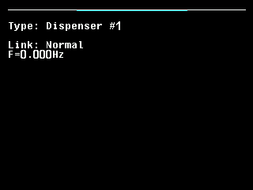

Capteur d'arbre de doseur
Les réglages d'un capteur d'arbre de doseur du Hectare Mini — la période pour « No rotation », le contrôle de la vitesse de l'arbre par rapport à la vitesse d'avancement et le contrôle du poids de produit — avec plages et valeurs par défaut.
Un capteur d'arbre de doseur compte les tours de l'arbre doseur. Au minimum, il vous indique que l'arbre s'est arrêté. Étalonné, il surveille aussi la vitesse de l'arbre par rapport à la vitesse d'avancement, ou compte le poids de produit appliqué. Chaque capteur de doseur a ses propres réglages — réglez-les tous.
Ouvrez son menu contextuel comme dans Réglages des capteurs.

| Paramètre | Niveau | Fonction | Plage · valeur par défaut |
|---|---|---|---|
| « Dispenser calibration(weight) » | Operator | Lance l'étalonnage au poids — Étalonner le doseur au poids. Affichée uniquement avec « Weight control » sur « Yes ». | — |
| « Period, s » | Operator | Le plus long délai entre deux impulsions du capteur. Si l'arbre ne donne aucune impulsion pendant plus longtemps alors que la machine sème ou avance, le boîtier déclenche « No rotation ». | 1 … 60 s · 10 s |
| « Rotation speed control » | Agronomist | « Yes » : la vitesse de l'arbre est surveillée par rapport à la vitesse d'avancement, dans la limite de « Maximum error, % ». « No » : on vérifie seulement que l'arbre tourne. Exige l'étalonnage de la rotation. | « No » / « Yes » · « No » |
| « Wheel, pulses » | Agronomist | Impulsions du capteur de vitesse qui correspondent à « Dispenser pulses » de ce capteur. Inscrit par l'étalonnage de la rotation. Affiché avec « Rotation speed control » sur « Yes ». | 1 … 65535 · 100 |
| « Dispenser pulses » | Agronomist | Impulsions de ce capteur qui correspondent à « Wheel, pulses ». Inscrit par l'étalonnage de la rotation. | 1 … 65535 · 100 |
| « Maximum error, % » | Agronomist | Écart admis de la vitesse de l'arbre ; au-delà, tant que la machine avance, « Low speed of rotation » ou « High speed of rotation ». | 1 … 50 % · 10 % |
| « Weight control » | Agronomist | « Yes » : le boîtier compte le poids de produit appliqué à l'hectare d'après les tours de cet arbre. Exige l'étalonnage au poids. | « No » / « Yes » · « No » |
| « Type of product » | Agronomist | Le produit que ce doseur applique : « Product 1 », « Product 2 » ou « Product 3 ». Affiché avec « Weight control » sur « Yes ». | · « Product 1 » |
| « Weight, gr » | Agronomist | Poids de produit qui correspond à « Weight, pulses » — ensemble, le débit du doseur par tour. Inscrit par l'étalonnage au poids. | 1 … 65535 · 10000 |
| « Weight, pulses » | Agronomist | Impulsions de ce capteur qui correspondent à « Weight, gr ». | 1 … 65535 · 100 |
Sans capteur de vitesse dans le profil, le boîtier ne peut que vérifier si l'arbre tourne : les rubriques de vitesse et de poids sont masquées.
Type de produit
Le boîtier suit jusqu'à trois produits au poids. Les doseurs qui appliquent le même produit reçoivent le même numéro :
| Machine | Réglage |
|---|---|
| Un capteur de doseur | « Product 1 ». |
| Deux doseurs, la même semence | « Product 1 » sur les deux. |
| Deux doseurs, semence et engrais sec | « Product 1 » sur le doseur de semence, « Product 2 » sur le doseur d'engrais. |
| Trois doseurs, deux pour la semence, un pour l'engrais | « Product 1 » sur les deux doseurs de semence, « Product 2 » sur le troisième. |
Un produit déjà dosé par un moteur électrique ne peut pas être choisi ici ; le boîtier passe au suivant qui est libre. Si aucun produit n'est libre, « Weight control » reste sur « No ».
L'écran d'état
Affiche la fréquence d'impulsions F= en Hz, à trois décimales — L'écran d'état d'un capteur.

Votre machine fait quelque chose que cette page n'explique pas ? Écrivez à support@agriwelt.com — un ingénieur vous répond.